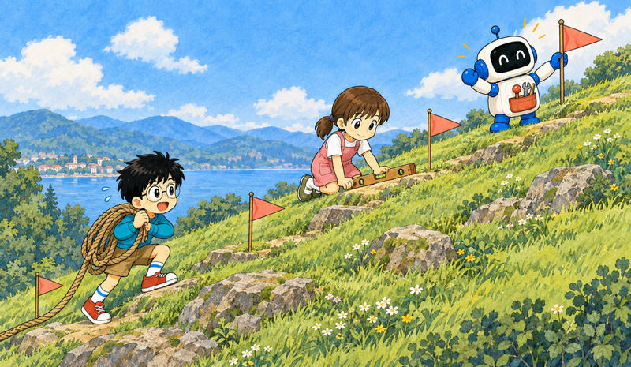

Feature 03 · ARTICLE · 2026 09
Automating eval design and hillclimbing with Claude
Evaluations tell you how your app or skill performs on specific tasks. Designing them, and improving against them without fooling yourself, is hard. We’ve added guidance for both to the claude-api skill. /claude-api build-eval builds an evaluation inside your codebase. /claude-api hillclimb improves your application against it one change at a time, with a held-out set to catch overfitting. On an internal support benchmark, the hillclimb raised held-out accuracy from 78.6% to 90.5% at about one fifth of the cost.

Eval design
A good evaluation has four traits:
Tasks mirror production. Tasks are sometimes chosen because they are easy to generate or grade. Choose them because they represent what you actually care about.
Stronger models and more thinking score higher. If they don’t, ambiguous tasks or a miscalibrated grader are often to blame.
There is headroom at the frontier. The best model at the highest effort should sit well below 100%, and the gap shouldn’t come from impossible or ambiguous tasks. A common tell is a task that fails every run, however many replicates. A good task is one where two domain experts would reach the same verdict and everything the grader checks is stated in the task.
Low run-to-run variance. High variance often comes from ambiguous tasks or a grader that gives different verdicts on identical output. It can also hide in configuration, such as effort applied inconsistently, or in the environment: leftover state from an earlier trial, a file or a git history, can hand the agent the answer.
Model capability is jagged. If you pick cases because today’s model fails them, you sample the valleys of one model’s surface, and the evaluation may end up measuring that model’s failure fingerprint rather than what is hard or valuable for your application. Pick hard cases because a human judged them hard, and be able to say why before including one. Draw on real failures from production traffic, bug reports, and tickets, but don’t trust user traffic blindly: users try what they expect to work, so it may skew easy.
/claude-api build-eval
Claude interviews you, builds the eval in your codebase, and pauses for approval at set points. It samples inputs in this order: production transcripts (after asking about retention and sensitive data), bug reports and support tickets, five to ten cases you write by hand, and cases synthesized from your codebase. It shows every input on a simple page and waits for your confirmation.
It then proposes the cheapest grader that fits:
Programmatic checks when outputs are constrained: exact match, a label from a fixed set, JSON matching a schema, passing tests.
LLM-as-judge when outputs are open-ended but quality criteria are clear. A second model reads the input, the output, and a rubric written as checkable claims, not a 1-to-5 scale. With a baseline, the judge reads both in random order, unaware which is the baseline, and picks the better one. The judge should not be the model you are testing.
Claude grades a handful of cases and asks whether you’d have scored any differently. Scoring failures are among the most common ways an evaluation is misconfigured. Once you approve the grader, the skill states the run size and rough duration, runs the baseline, and prints the score with a confidence interval. You get the cases, grader, runner, one JSON line and one transcript per case, and a plain page linking each score to its transcript.
During the baseline, Claude runs the grader twice on the same output to see if the verdict changes, checks for timeouts, API errors, and cut-off answers, and warns you if the baseline is already around 95% or higher, in which case the hillclimb should aim at cost or latency rather than quality.
Hillclimbing
Hillclimbing suits parameters like effort or prompts that trade cost against performance. Choose a surface that is:
Cheap to change. Prompts and skills are easy to edit and revert; open-ended harness changes may mean extensive code work.
Attributable. Score changes should trace to the surface you edit. Skill triggering works well because the trigger rate is directly coupled to the skill description.
Well scoped. A near-saturated eval or an open-ended request to update the harness is more likely to stall. Cost is a strong objective even when the eval is saturated.
An evaluation rarely matches production exactly, so overfitting is common. The eval can leak into the harness: if eval tasks benefit from OCR but production rarely does, the hillclimber may add an OCR tool that lifts the score and nothing else. Three safeguards help:
Split the cases into a train set the hillclimber reads and a test set it never sees. Train rising while test stays flat is a warning sign.
Never paste failures into the prompt.
Keep answers structurally out of the model’s reach, since models can reward hack by finding them.
/claude-api hillclimb

You choose what Claude may change: system prompt, skills or instruction files, tool descriptions, model, effort and other API parameters, or harness code. Claude asks your goal, such as performance, or cost while performance holds, and splits the set at random into train and test. With a cost goal it considers prompt caching, auditing the prompt for the selected model, and the choice of model and effort.
Before the first round, Claude checks that the eval’s noise is smaller than the smallest improvement you’d act on; if it isn’t, it suggests more repetitions or cases. Each round, it reads the previous train transcripts and proposes one patch, aimed at the root of a failure rather than a reworded line. If train and test both improve, it keeps the patch. If only train improves, or either regresses, it reverts.
When the score stalls for two or three rounds, Claude sorts every remaining train failure by cause. This can expose ambiguous cases, harness errors, or variance; only legitimate failures feed further rounds. At the end, Claude leaves your code at the version that did best on test and reports it against the baseline with confidence intervals. If the gain is within noise, it says so and recommends against merging.
Examples

Cost. An internal customer support benchmark had 44 tickets: 30 for the search, 14 held out. It started on Opus 4.8 at high effort, with 74.4% decision accuracy on the search tickets at 4.6 cents per ticket. The hillclimb first audited the prompt, removing mandatory tool-call rituals, a scratchpad step, and contradictory rules. Opus 5.5 on low effort then scored 87.8% at 1.9 cents. Part of that saving comes from pricing: Opus 5.5 input and output tokens cost 20% less than Opus 4.8, and cache reads 60% less. Sonnet 5 on low effort scored 88.9% at about 1 cent. Routing rules and a refund-cap cross-reference in the prompt brought Sonnet 5 to 98.9% at about the same cost. On the 14 held-out tickets, the final setup scored 90.5% against the original’s 78.6%, at about one fifth of the cost.
Performance. We built an eval from our documentation for the claude-api skill itself. It started at 66%. With access to docs and SDKs, Claude found eight missing features; covering them reached 74%. Fixing errors in the C# and Java type tables reached 77%.
After two stalled rounds, Claude sorted the remaining failures by cause, making no edit. It found the skill content was present but Claude was writing older API shapes from its trained priors. The hillclimber added a table near the top mapping remembered forms to current ones, such as fixed-budget extended thinking, which the API now rejects on recent Opus models, to adaptive thinking, and older web search and web fetch tools to current versions. It also moved the C# and Java warnings above their adaptive-thinking examples. That reached 80%.
Tasks that never improved pointed to flawed examples or graders. One task asked for code catching one error type while its grader wanted a chain of at least three; Claude reworded the task. Another grader contradicted our docs, and testing the real API showed the docs were right. Those fixes, plus more skill edits, brought the score to about 88%.